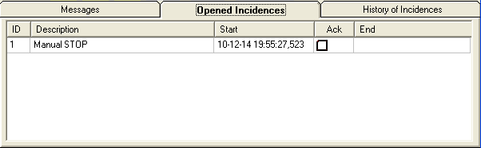
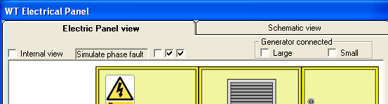
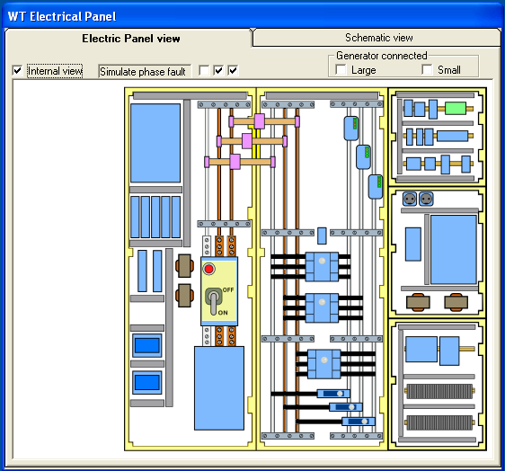
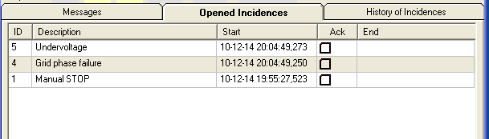

In order to operate the Wind Turbine needs the presence of a reliable electric Grid.
A real Controller verifies that the RMS voltages in each phase are within the predefined range and that the phase angles between the three power lines are the correct ones, in sign and in value.
The Controller supply does not depend directly on the Grid (ie. the Main Switch of the Wind Turbine may be off and the Controller may be working) through a UPS.
The Controller checks that the voltages in each of the phases are Ok, detecting both the presence or not of voltages and the under-voltage in some of them. If there is a lack of voltage on some of the phases or some of them are rated voltage them the Controller report an incidence that is registered as well as start a STOP sequence.
With the WTElectricalPanel synoptic you can simulate the presence of voltages in the Grid acting on the "Main switch", visible in both of the "Electrical Panel view" (internal and normal). You can also simulate the loss of voltage in a particular phase using the check-boxes labeled "Simulate phase fault".
As typical starting procedure exercises the following steps:
1.Start the application and rearrange the synoptics so you see the WTElectricalPanel, "Control Terminal" and "WindNancelle" synoptics.
2.Go the the "WTElectricalPanel" and set the "Main Switch" to the On position.
3.Go to the "Executing" form and press "Run".
4.The Control Terminal, in the "Opened Incidences" tab, shows that the Wind Turbine is in the first state: Manual STOP

5.Grid failure before start. We can simulate a phase failure in the Electrical Panel turning off the main switch or clicking in the "simulate phase fault" check-boxes in the upper part of the synoptic.
6.Try un-checking one phase. In a few seconds the "Under-voltage" and "Grid phase failure" incidences will appear in the Control Terminal

7.Check the internal view of the Electric Panel, observe that the busbar associated with the failing phase now is in a Grey color indicating that there is not voltage in it.

8.Check in the Control Terminal that two incidences appeared, indicating that the Controller Emulator has detected this event. You can see the Id, the incidence identifier, also called "error code" in other systems, and the date of start of the incidence, with millisecond resolution.

9.The Grid failures have assigned one small time delay to prevent a stop due to a short time failure in the Grid typically due to a switching procedure in the distribution network, see the "Voltage-Ride-Through" and Grid codes explanation